Лучшее веган молоко
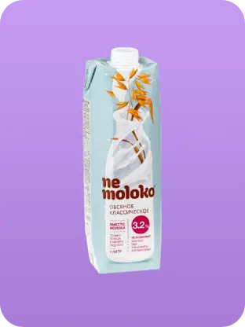190 голосов
Овсяное молоко 3,2% Nemoloko
распределение голосов
Соевое молоко с бананом Alpro
183
Овсяное молоко с ванилью Nemoloko
90
Овсяное молоко 3,2% Овсяша
98
Овсяное молоко шоколадное 3,2% Овсяша
74
Овсяное молоко 3,2% Nemoloko
190
Соевое молоко ванильное Alpro
80
Молоко овсяное шоколадное Nemoloko
132
Рисовое молоко 1.5% Nemoloko
44
Ореховое молоко фундук-шоколад Zinus
82
Соевое молоко с лесным орехом Hi
64
Лучшее веган бариста молоко
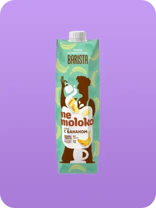108 голосов
Банановое соевое молоко бариста Nemoloko
распределение голосов
Миндальное молоко для бариста Nemoloko
100
Кокосовое молоко для бариста Nemoloko
78
Овсяное молоко для бариста Oddly Good
30
Соевое молоко для бариста Nemoloko
44
Банановое соевое молоко бариста Nemoloko
108
Молоко для кофе Hazelnut Green Milk
75
Миндальное бариста молоко Velle
34
Молоко кешью бариста Свитлогорье
13
Кокосовое бариста молоко Velle
40
Лучший веган йогурт
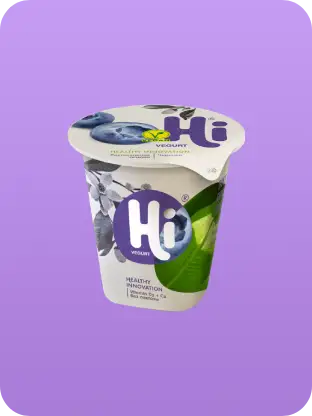166 голосов
Йогурт черника Hi
распределение голосов
Соевый йогурт с вишней Green Idea
131
Йогурт черника Hi
166
Йогурт Виноград, фейхоа и желе кокосовое Hi
149
Йогурт Манго и мюсли Hi
110
Соевый йогурт с клубникой Green Idea
95
Йогурт Грейпфрут Hi
93
Кокосовый йогурт с апельсином и манго Green Idea
26
Питьевой йогурт с малиной и жимолостью Hi
164
Десерт с шоколадными шариками Nemoloko
160
Питьевой йогурт с лимоном и лаймом Hi
99
Лучший веган сыр
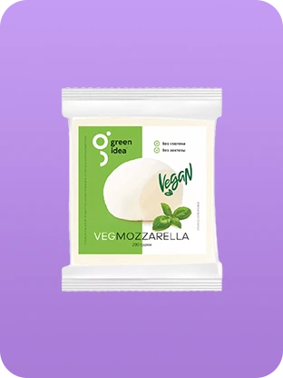170 голосов
Сыр Моцарелла Green Idea
распределение голосов
Сыр блок оригинальный Просто-Постно
39
Сыр Гауда нарезка Green Idea
133
Сыр Indian DaVega
37
Сыр Моцарелла Green Idea
170
Сыр Пармезан Green Idea
106
Сыр с зеленью Regalio Vegan
61
Сыр со вкусом чеддер блок Nature&Moi
17
Сыр Гауда DaVega
20
Сыр Чеддар нарезка Green Idea
141
Сыр оригинальный Regalio Vegan
48
Лучшее веган мороженое
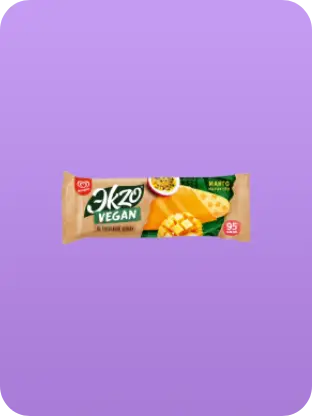252 голоса
Манго-Маракуйя Веган Ekzo
распределение голосов
Манго-Маракуйя Веган Ekzo
252
Эскимо Кокос ВкусВилл
108
Мороженое Кокос 33 Пингвина
53
Шоколадный пломбир Friky
61
Мороженое шоколадное Baskin Robbins
100
Джелато сендвич Valsoia
40
Карамельный рожок Friky
80
Не мороженое Сакское
13
Лучший веган сырок
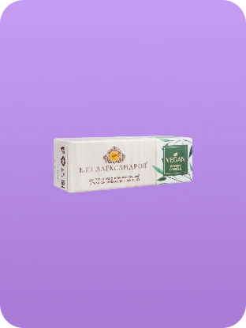149 голосов
Сырок Веган Б.Ю. Александров
распределение голосов
Сырок Веган Б.Ю. Александров
149
Глазированный сырок со сгущенкой Raw to go
45
Сырок с печенькой Friky
97
Сырок соевый в темном шоколаде ВкусВилл
131
Десерт веганский Кешью-сгущенка ВкусВилл
23
НЕсырок Кокос-карамель PlatON
14
Лучший веган майонез
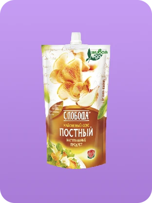214 голосов
Майонез Слобода Постный 56%
распределение голосов
Майонез Слобода Постный 56%
214
Майонез постный Ласка
194
Майонезный соус Постный Провансаль 56% Махеевъ
41
Майонезный соус Постный с лимонным соком 56% Махеевъ
40
Майонез Соевый ВкусВилл
43
Майонезный соус вегетарианский Solio Vegan
31
Майонез Develey
35
Соус майонезный Татарский Develey
22
Соус майонезный постный Московский Провансаль 55%
58
Майонез соус постный с укропом 25% Скит
12
Лучший веган крем-чиз
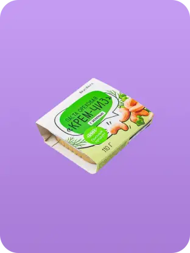92 голоса
Крем-Чиз с зеленью ВкусВилл
распределение голосов
Крем-Чиз с зеленью ВкусВилл
92
Крем-чиз грибы и розмарин Solio Vegan
82
Крем-Чиз ВкусВилл
49
Крем-Чиз из кешью с зеленью Casa Kubana
31
Крем-чиз с грибами лисичками De Olio
22
ВегЧиз из кешью с французскими травами и чесноком Айскро
16
Крем-чиз с пряными травами De Olio
33
Крем-чиз авокадо и грецкий орех Solio Vegan
35
Крем-сыр Веганская креветка Vego
28
Лучшее веган мясо
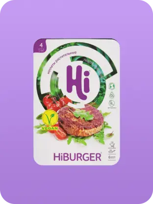194 голоса
Котлеты классические Hi Еда будущего
распределение голосов
Котлеты со вкусом говядины неМясо
64
Котлеты классические Hi Еда будущего
194
Котлеты для бургера HiBurger Еда будущего
189
Фрикадельки HiBalls Еда будущего
115
Котлета для бургера Vegafood
20
Фарш Welldone
40
Котлеты Вместо говядины Митлесс
22
Люля-кебаб неМясо
77
Домашние котлеты Welldone
34
Растительный фарш HiBeef Еда будущего
92
Лучшая веган курица
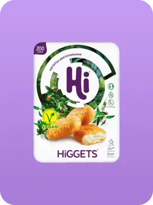311 голосов
Наггетсы Higgets Еда будущего
распределение голосов
Наггетсы Higgets Еда будущего
311
Котлеты со вкусом курицы неМясо
70
Наггетсы некурица Perfetto
49
Капчикенс Высший Вкус
120
Наггетсы с сыром и паприкой Vegafood
36
Стрипсы вместо курицы Greenwise
49
Котлеты со вкусом ароматной курочки неМясо
64
Филе вместо курицы Greenwise
26
Наггетсы Vegafood
22
Наггетсы Like Meat
22
Лучшая веган рыба
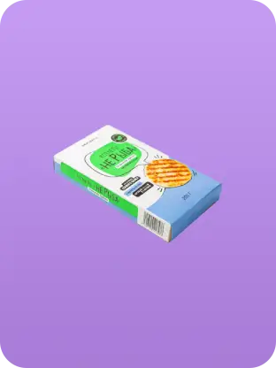97 голосов
Котлеты со вкусом трески Не рыба ВкусВилл
распределение голосов
Котлеты со вкусом трески Не рыба ВкусВилл
97
Лосось в кисло-сладком соусе Green Fish Agama
65
Котлеты со вкусом краба Не рыба ВкусВилл
90
Палочки #23 вместо рыбы Vegafood
59
Филе веганского лосося Vego
32
Фиш бургер Green Fish Agama
9
Деликатес морской ВегановЪ
4
Альтернативный сибас Green Fish Agama
18
Котлеты #26 вместо рыбы Vegafood
21
Краб бургер Green Fish Agama
12
Лучшие веган яйца
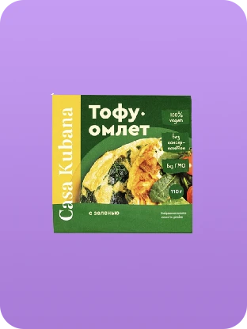121 голос
Тофу-омлет с зеленью Casa Kubana
распределение голосов
Глазунья Friky
64
VegOmlet EGGan
61
Тофу-омлет с зеленью Casa Kubana
121
Заменитель яиц Не яйцо Newa Nutrinion
19
Заменитель яиц без глютена Polezzno
19
Заменитель яйца Mallakto
9
Заменитель яйца Мак Мастер
6
Лучшие веган пельмени
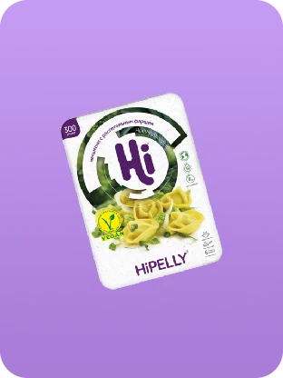210 голосов
Пельмени с растительным фаршем HiPelly Еда будущего
распределение голосов
Пельмени со вкусом сочной говядины неМясо
114
Пельмени с растительным фаршем HiPelly Еда будущего
210
Пельмени со вкусом лосося Не рыба ВкусВилл
42
Пельмени Vegafood
36
Пельмени с картофелем и шпинатом Зеленые Крутогорские
9
Пельмени с картофелем и жареным луком В Великий пост Талосто
18
Пельмени с луком и чесноком Welldone
36
Пельмени нутовые с вешенками Veganika
3
Пельмени с чечевицей и морковью Ильинка
6
Пельмени неМясо со вкусом говядины ВкусВилл
115
Лучший веган паштет
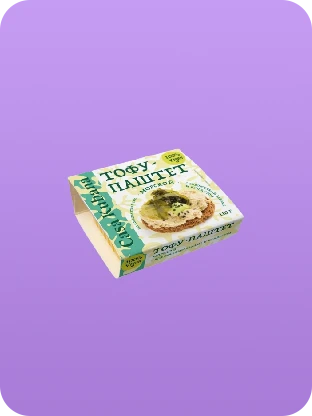134 голоса
Паштет морской Casa Kubana
распределение голосов
Паштет с кунжутом Гродфуд
91
Паштет морской Casa Kubana
134
Паштет барбекю Casa Kubana
78
Паштет докторский Casa Kubana
18
Крем-паштет с луком Дымов
64
Крем-паштет с грибами Дымов
94
Паштет белый нут Perva
66
Паштет сиеста Casa Kubana
33
Лучшие веган сосиски
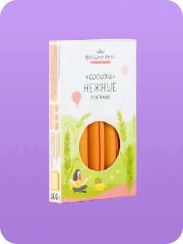145 голосов
Сосиски Нежные Высший Вкус
распределение голосов
Сосиски пшеничные Botaniс Высший Вкус
139
Сосиски злаковые Delicious Classic Высший Вкус
77
Сардельки пшеничные шпикачки Высший Вкус
78
Сосиски Нежные Высший Вкус
145
Сосиски постные с паприкой Микоян
57
Сосиски для жарки НЕ МЯСО Tashir Food
34
Сосиски веганские Классические Vegafood
13
Сосиски веганские Докторские Vego
40
Сардельки Венские Митлесс
51
Сосиски нежные миньон постные Vego
58
Лучшая веган колбаса
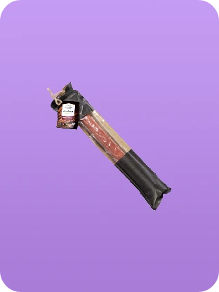133 голоса
Колбаса вялено-копченая Таллинская Высший Вкус
распределение голосов
Колбаса вялено-копченая Таллинская Высший Вкус
133
Колбаса полукопченая Сервелат Vego
74
Колбаса вялено-копченая Краснодарская Высший Вкус
101
Колбаса Экстравюрст Самокат
52
Колбаса вегетарианская с грибами Велком
40
Колбаса вегетарианская классическая Велком
52
Колбаса сочная деликатесная Высший Вкус
71
Колбаса пшеничная Botanic Высший Вкус
50
Колбаса веганская полукопченая Московская Vego
35
Колбаса веганская вареная любительская Vego
29
Лучший тофу
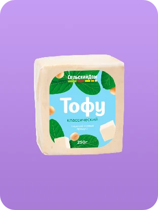224 голоса
Тофу классический Сельский Дом
распределение голосов
Тофу классический Сельский Дом
224
Тофу классический Royal Tofu
36
Тофу копченый ВегановЪ
11
Тофу с базиликом Сельский Дом
73
Тофу натуральный ЯСО
70
Тофу с оливками Сельский Дом
68
Тофу копченый Соймик
60
Тофу Копченый Mallakto
74
Тофу Итальянский ВкусВилл
69
Тофу копченый Веган Иваныч
49